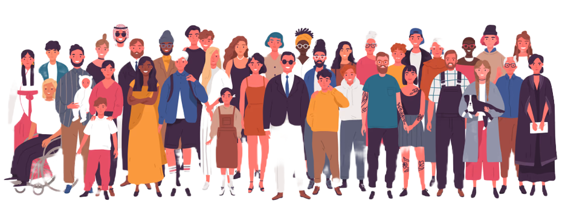

about🌱
self-bloom is a project meant to promote self-empowerment and self-care in a world that increasingly demands unrealistic expectations. Social media provides perfectly curated versions of the people around us, and we need to remind ourselves to find all the imperfect perfections within ourselves too. We're here to remind you how to love yourself from within.
